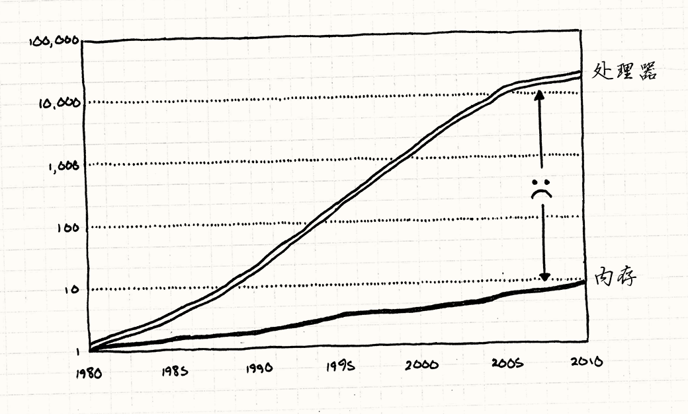
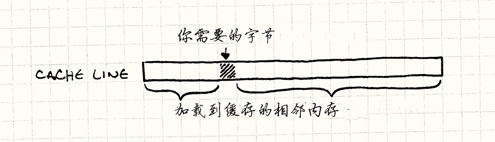

数据局部性
游戏设计模式Optimization Patterns
Intent
意图
Accelerate memory access by arranging data to take advantage of CPU caching.
安排数据，充分使用CPU的缓存来加速内存读取。
Motivation
动机
We’ve been lied to. They keep showing us charts where CPU speed goes up and up every year as if Moore’s Law isn’t just a historical observation but some kind of divine right. Without lifting a finger, we software folks watch our programs magically accelerate just by virtue of new hardware.
我们被欺骗了。 他们一直向我们展示CPU速度每年递增的图表，就好像摩尔定律不是观察历史的结果，而是某种定理。 无需吹灰之力，软件凭借着新硬件就可以奇迹般的加速。
Chips have been getting faster (though even that’s plateauing now), but the hardware heads failed to mention something. Sure, we can process data faster than ever, but we can’t get that data faster.
芯片确实越来越快（就算现在也在变快），但硬件头头没有提到某些事情。 是的，我们可以更快的处理数据，但不能更快的获得数据。

For your super-fast CPU to blow through a ream of calculations, it actually has to get the data out of main memory and into registers. As you can see, RAM hasn’t been keeping up with increasing CPU speeds. Not even close.
为了让你超高速的CPU刮起指令风暴， 它需要从内存获取数据加载到寄存器。 如你所知，RAM没有紧跟CPU的速度增长，差远了。
With today’s hardware, it can take hundreds of cycles to fetch a byte of data from RAM. If most instructions need data, and it takes hundreds of cycles to get it, how is it that our CPUs aren’t sitting idle 99% of the time waiting for data?
借助现代的硬件，需要上百个周期从RAM获得一比特的数据。 如果大部分指令需要的数据都需要上百个周期去获取， 那么为什么我们的CPU没有在99%的时间中等待数据而空转？
Actually, they are stuck waiting on memory an astonishingly large fraction of time these days, but it’s not as bad as it could be. To explain how, let’s take a trip to the Land of Overly Long Analogies…
事实上，等待内存确实消耗很长时间，但是没有那么糟糕。 为了解释为什么，让我们看一看这一长串类比……
A data warehouse
数据仓库
Imagine you’re an accountant in a tiny little office. Your job is to request a box of papers and then do some accountant-y stuff with them — add up a bunch of numbers or something. You must do this for specific labeled boxes according to some arcane logic that only makes sense to other accountants.
想象一下，你是小办公室里的会计。 你的任务是拿盒文件，然后做一些会计工作——把数据加起来什么的。 你必须根据一堆只对其他会计师有意义的晦涩难懂逻辑，取出特定标记的文件盒并工作。
Thanks to a mixture of hard work, natural aptitude, and stimulants, you can finish an entire box in, say, a minute. There’s a little problem, though. All of those boxes are stored in a warehouse in a separate building. To get a box, you have to ask the warehouse guy to bring it to you. He goes and gets a forklift and drives around the aisles until he finds the box you want.
感谢辛勤地工作，天生的悟性，还有兴奋剂，你可以在一分钟内完成一个文件盒。 但是这里有一个小小的问题。所有这些文件盒都存储在分离的仓库中。 想要拿到一个文件盒，需要让仓库管理员带给你。 他开着叉车在传送带周围移动，直到能找到你要的文件盒。
It takes him, seriously, an entire day to do this. Unlike you, he’s not getting employee of the month any time soon. This means that no matter how fast you are, you only get one box a day. The rest of the time, you just sit there and question the life decisions that led to this soul-sucking job.
这会消耗他，认真的，一整天才能完成。 不像你，他下个月就不会被雇佣了。 这就意味着无论你有多快，一天只能拿到一个文件盒。 剩下的时间，你只能坐在那里，质疑这个折磨灵魂的工作。
One day, a group of industrial designers shows up. Their job is to improve the efficiency of operations — things like making assembly lines go faster. After watching you work for a few days, they notice a few things:
一天，一组工业设计师出现了。 他们的任务是提高操作的效率——比如让传送带跑得更快。 在看着你工作几天后，他们发现了几件事情：
-
Pretty often, when you’re done with one box, the next box you request is right next to it on the same shelf in the warehouse.
-
通常，当你处理文件盒时，下一个需要的文件盒就在仓库同样架子上面。
-
Using a forklift to carry a single box of papers is pretty dumb.
-
叉车一次只取一个文件盒太愚蠢了。
-
There’s actually a little bit of spare room in the corner of your office.
-
在你的办公室角落里还是有些空余空间的。
They come up with a clever fix. Whenever you request a box from the warehouse guy, he’ll grab an entire pallet of them. He gets the box you want and then some more boxes that are next to it. He doesn’t know if you want those (and, given his work ethic, clearly doesn’t care); he simply takes as many as he can fit on the pallet.
他们想出来一个巧妙的办法。 无论何时你问仓库要一个盒子，他都会带给你一托盘的盒子。 他给你想要的盒子，以及它周围的盒子。 他不知道你是不是想要这些（而且，根据工作条件，他根本不在乎）； 他只是尽可能的塞满托盘，然后带给你。
He loads the whole pallet and brings it to you. Disregarding concerns for workplace safety, he drives the forklift right in and drops the pallet in the corner of your office.
无视工作场地的安全，他直接将叉车开到你的办公室，然后将托盘放在办公室的角落。
When you need a new box, now, the first thing you do is see if it’s already on the pallet in your office. If it is, great! It only takes you a second to grab it and get back to crunching numbers. If a pallet holds fifty boxes and you got lucky and all of the boxes you need happen to be on it, you can churn through fifty times more work than you could before.
当你需要新盒子，你需要做的第一件事就是看看它在不在办公室角落的托盘里。 如果在，很好！你只需要几分钟拿起它然后继续计算数据。 如果一个托盘中有五十个盒子，而幸运的你需要所有盒子，你可以以五十倍的速度工作。
But if you need a box that’s not on the pallet, you’re back to square one. Since you can only fit one pallet in your office, your warehouse friend will have to take that one back and then bring you an entirely new one.
但是如果你需要的盒子不在托盘上，就要一新托盘。 由于你的办公室里只能放一个托盘，你的仓库朋友只能将老的拿走，带给你一个全新的。
A pallet for your CPU
你CPU的托盘
Strangely enough, this is similar to how CPUs in modern computers work. In case it isn’t obvious, you play the role of the CPU. Your desk is the CPU’s registers, and the box of papers is the data you can fit in them. The warehouse is your machine’s RAM, and that annoying warehouse guy is the bus that pulls data from main memory into registers.
奇怪的是，这就是现代CPU运转的方式。如果还不够明显，你是CPU。 你的桌子是CPU的寄存器，一盒文件就是你桌上可以放下的数据。 仓库是机器的RAM，那个烦人的仓库管理员是从主存加载数据到寄存器的总线。
If I were writing this chapter thirty years ago, the analogy would stop there. But as chips got faster and RAM, well, didn’t, hardware engineers started looking for solutions. What they came up with was CPU caching.
如果我在三十年前写这一章，这个比喻就到此为止了。 但是芯片越来越快，而RAM，好吧，“没有跟上”，硬件工程师开始寻找解决方案。 他们想到的是CPU缓存。
Modern computers have a little chunk of memory right inside the chip. The CPU can pull data from this much faster than it can from main memory. It’s small because it has to fit in the chip and because the faster type of memory it uses (static RAM or “SRAM”) is way more expensive.
现代的电脑在芯片内部有一小块存储器。 CPU从那上面取数据比从内存取数据快得多。 它很小，因为需要放在芯片上，它很快，因为使用的（静态RAM，或者SRAM）内存更贵。
This little chunk of memory is called a cache (in particular, the chunk on the chip is your L1 cache), and in my belabored analogy, its part was played by the pallet of boxes. Whenever your chip needs a byte of data from RAM, it automatically grabs a whole chunk of contiguous memory — usually around 64 to 128 bytes — and puts it in the cache. This dollop of memory is called a cache line.
这一小片内存被称为缓存（特别的，芯片上的被称为L1级缓存）， 在比喻中，这是由托盘扮演的。 无论何时芯片需要从RAM取一字节的数据，它自动将一整块内存读入——通常是64到128字节——然后将其放入缓存。 这些一次性传输的字节被称为cache line。

If the next byte of data you need happens to be in that chunk, the CPU reads it straight from the cache, which is much faster than hitting RAM. Successfully finding a piece of data in the cache is called a cache hit. If it can’t find it in there and has to go to main memory, that’s a cache miss.
如果你需要的下一字节就在这块上， CPU从缓存中直接读取，比从RAM中读取快得多。 成功从缓存中找到数据被称为“缓存命中”。 如果不能从中获得而得去主存里取，这就是一次缓存不命中。
When a cache miss occurs, the CPU stalls — it can’t process the next instruction because it needs data. It sits there, bored out of its mind for a few hundred cycles until the fetch completes. Our mission is to avoid that. Imagine you’re trying to optimize some performance-critical piece of game code and it looks like this:
当缓存不命中时，CPU空转——它不能执行下一条指令，因为它没有数据。 它坐在那里，无聊的等待几百个周期直到获取数据。 我们的任务是避免这一点。想象你在优化一块性能攸关的游戏代码，长得像这样：
for (int i = 0; i < NUM_THINGS; i++) { sleepFor500Cycles(); things[i].doStuff(); }
What’s the first change you’re going to make to that code? Right. Take out that pointless, expensive function call. That call is equivalent to the performance cost of a cache miss. Every time you bounce to main memory, it’s like you put a delay in your code.
你会做的第一个变化是什么？对了。 将那个无用的，代价巨大的函数调用拿出来。 这个调用等价于一次缓存不命中的代价。 每次跳到内存，都会延误你的代码。
Wait, data is performance?
等等，数据是性能？
When I started working on this chapter, I spent some time putting together little game-like programs that would trigger best case and worst case cache usage. I wanted benchmarks that would thrash the cache so I could see first-hand how much bloodshed it causes.
当开始写这一章时，我花费了一些时间收集缓存使用最好和最坏的例子。 我想要缓存速度的基准，这样可以得到浪费的第一手消息。
When I got some stuff working, I was surprised. I knew it was a big deal, but there’s nothing quite like seeing it with your own eyes. I wrote two programs that did the exact same computation. The only difference was how many cache misses they caused. The slow one was fifty times slower than the other.
当得到了一些工作的例子，我惊到了。 我知道这是一个大问题，但眼见为实。 我写过两个程序完成完全相同的计算。 唯一的区别是它们会造成缓存不命中的数量。 慢的那个比另一个慢五十倍。
This was a real eye-opener to me. I’m used to thinking of performance being an aspect of code, not data. A byte isn’t slow or fast, it’s just some static thing sitting there. But because of caching, the way you organize data directly impacts performance.
这让我大开眼界。我一直从代码的角度考虑性能，而不是数据。 一个字节没有快慢，它是静态的。但是因为缓存的存在，组织数据的方式直接影响了性能。
The challenge now is to wrap that up into something that fits into a chapter here. Optimization for cache usage is a huge topic. I haven’t even touched on instruction caching. Remember, code is in memory too and has to be loaded onto the CPU before it can be executed. Someone more versed on the subject could write an entire book on it.
现在真正的挑战是将这些打包成一章内可以讲完的东西。 优化缓存使用是一个很大的话题。 我还没有谈到指令缓存呢。 记住，代码也在内存上，而且在执行前需要加载到CPU上。 有些更熟悉这个主题的人可以就这个问题写一整本书。
Since you’re already reading this book right now, though, I have a few basic techniques that will get you started along the path of thinking about how data structures impact your performance.
既然你已经在阅读这本书了， 我有几个基本技术让你开始考虑数据结构是如何影响性能的。
It all boils down to something pretty simple: whenever the chip reads some memory, it gets a whole cache line. The more you can use stuff in that cache line, the faster you go. So the goal then is to organize your data structures so that the things you’re processing are next to each other in memory.
这可以归结得很简单：芯片读内存，总是获得一整块cache line。 你能从cache line读到越多你要的东西，跑得就越快。 所以目标是组织数据结构，让要处理的数据紧紧相邻。
In other words, if your code is crunching on Thing, then Another, then
Also, you want them laid out in memory like this:
换言之，如果你正处理Thing，然后Another然后Also，你需要它们这样呆在内存里：

Note, these aren’t pointers to Thing, Another, and Also. This is the
actual data for them, in place, lined up one after the other. As soon as the CPU
reads in Thing, it will start to get Another and Also too (depending on
how big they are and how big a cache line is). When you start working on them
next, they’ll already be cached. Your chip is happy, and you’re happy.
注意，这不是Thing，Another，和Also的指针。
这就是真实的数据，一个接着一个。
CPU读到Thing，也会读取Another和Also（取决于数据的大小和cache line的大小）。
当你开始下一个时，它们已经在缓存上了。芯片很高兴，你也很高兴。
The Pattern
模式
Modern CPUs have caches to speed up memory access. These can access memory adjacent to recently accessed memory much quicker. Take advantage of that to improve performance by increasing data locality — keeping data in contiguous memory in the order that you process it.
现代的CPU有缓存来加速内存读取。 它可以更快的读取最近访问过的内存毗邻的内存。 通过提高内存局部性来提高性能——保证数据以处理的方式排列在连续内存上。
When to Use It
何时使用
Like most optimizations, the first guideline for using the Data Locality pattern is when you have a performance problem. Don’t waste time applying this to some infrequently executed corner of your codebase. Optimizing code that doesn’t need it just makes your life harder since the result is almost always more complex and less flexible.
就像大多数优化方案，使用数据局部性的第一准则是在遇到性能问题时使用。 不要将其应用在代码库不经常使用的角落上。 优化代码不会让你过得更轻松，因为其结果往往更加复杂，更加缺乏灵活性。
With this pattern specifically, you’ll also want to be sure your performance problems are caused by cache misses. If your code is slow for other reasons, this won’t help.
就本模式而言，还得确认你的性能问题确实由缓存不命中引发。 如果代码是因为其他原因而缓慢，这个模式不会有帮助。
The cheap way to profile is to manually add a bit of instrumentation that checks how much time has elapsed between two points in the code, hopefully using a precise timer. To catch poor cache usage, you’ll want something a little more sophisticated. You really want to see how many cache misses are occurring and where.
简单的方案是手动添加指令，检查代码中两点间消耗的时间，寄希望于使用精确的计时器。 为了找到糟糕的缓存使用，你需要使用更加复杂的东西。 你想要知道缓存不命中有多少发生，又是在哪里发生的。
Fortunately, there are profilers out there that report this. It’s worth spending the time to get one of these working and make sure you understand the (surprisingly complex) numbers it throws at you before you do major surgery on your data structures.
幸运的是，有工具报告 这些。 在数据结构上做大手术前，花一些时间了解它们是如何工作， 理解它们抛出的一大堆数据（令人惊讶的复杂）是很有意义的。
That being said, cache misses will affect the performance of your game. While you shouldn’t spend a ton of time pre-emptively optimizing for cache usage, do think about how cache-friendly your data structures are throughout the design process.
话虽这么说，缓存不命中仍会影响游戏的性能。 虽然不应该花费大量时间提前优化缓存的使用，但是在设计过程中仍要思考数据结构是不是对缓存友好。
Keep in Mind
记住。
One of the hallmarks of software architecture is abstraction. A large chunk of this book is about patterns to decouple pieces of code from each other so that they can be changed more easily. In object-oriented languages, this almost always means interfaces.
软件体系结构的特点之一是抽象。 这本书很多的章节都在谈论如何解耦代码块，这样可以更容易的进行改变。 在面向对象的语言中，这几乎总是指接口。
In C++, using interfaces implies accessing objects through pointers or references. But going through a pointer means hopping across memory, which leads to the cache misses this pattern works to avoid.
在C++中，使用接口意味着通过指针或者引用访问对象。 但是通过指针就意味在内存中跳跃，这就带来了这章想要避免的缓存不命中。
In order to please this pattern, you will have to sacrifice some of your precious abstractions. The more you design your program around data locality, the more you will have to give up inheritance, interfaces, and the benefits those tools can provide. There’s no silver bullet here, only challenging trade-offs. That’s what makes it fun!
为了讨好这个模式，你需要牺牲一些宝贵的抽象。 你越围绕数据局部性设计程序，就越放弃继承接口和它们带来的好处。 没有银弹，只有挑战性的权衡。这就是乐趣所在！
Sample Code
示例代码
If you really go down the rathole of optimizing for data locality, you’ll discover countless ways to slice and dice your data structures into pieces your CPU can most easily digest. To get you started, I’ll show an example for each of a few of the most common ways to organize your data. We’ll cover them in the context of some specific part of a game engine, but (as with other patterns), keep in mind that the general technique can be applied anywhere it fits.
如果你真的要一探数据局部性优化的鼠洞，那么你会发现无数的方法去分割数据结构， 将其切为CPU更好处理的小块。 为了热热身，我会先从一些最通用的组织数据的方法开始。 我们会在游戏引擎的特定部分介绍它们， 但是（像其他章节一样）记住这些通用方法也能在其他部分使用。
Contiguous arrays
连续数组
Let’s start with a game loop that
processes a bunch of game entities. Those entities are decomposed into different
domains — AI, physics, and rendering — using the Component pattern. Here’s the GameEntity class:
让我们从处理一系列游戏实体的游戏循环开始。
实体被分解到不同的领域——AI，物理，渲染——使用了组件模式。
这里是GmaeEntity类。
class GameEntity { public: GameEntity(AIComponent* ai, PhysicsComponent* physics, RenderComponent* render) : ai_(ai), physics_(physics), render_(render) {} AIComponent* ai() { return ai_; } PhysicsComponent* physics() { return physics_; } RenderComponent* render() { return render_; } private: AIComponent* ai_; PhysicsComponent* physics_; RenderComponent* render_; };
Each component has a relatively small amount of state, maybe little more than a few vectors or a matrix, and then a method to update it. The details aren’t important here, but imagine something roughly along the lines of:
每个组件都有相对较少的状态，也许只有几个向量或一个矩阵， 然后会有方法去更新它。这里的细节无关紧要，但是想象一下，大概是这样发展的：
class AIComponent { public: void update() { /* Work with and modify state... */ } private: // Goals, mood, etc. ... }; class PhysicsComponent { public: void update() { /* Work with and modify state... */ } private: // Rigid body, velocity, mass, etc. ... }; class RenderComponent { public: void render() { /* Work with and modify state... */ } private: // Mesh, textures, shaders, etc. ... };
The game maintains a big array of pointers to all of the entities in the world. Each spin of the game loop, we need to run the following:
游戏循环管理游戏世界中一大堆实体的指针数组。每个游戏循环，我们都要做如下事情：
-
Update the AI components for all of the entities.
-
为每个实体更新他们的AI组件。
-
Update the physics components for them.
-
为每个实体更新他们的物理组件。
-
Render them using their render components.
-
为每个实体更新他们的渲染组件。
Lots of game engines implement that like so:
很多游戏引擎以这种方式实现：
while (!gameOver) { // Process AI. for (int i = 0; i < numEntities; i++) { entities[i]->ai()->update(); } // Update physics. for (int i = 0; i < numEntities; i++) { entities[i]->physics()->update(); } // Draw to screen. for (int i = 0; i < numEntities; i++) { entities[i]->render()->render(); } // Other game loop machinery for timing... }
Before you ever heard of a CPU cache, this looked totally innocuous. But by now, you’ve got an inkling that something isn’t right here. This code isn’t just thrashing the cache, it’s taking it around back and beating it to a pulp. Watch what it’s doing:
在你听说CPU缓存之前，这些看上去完全无害。 但是现在，你得看到这里有隐藏着的不对之处。 这不只是在颠簸缓存，这是在四处乱晃然后猛烈地敲击。看看它做了什么：
-
The array of game entities is storing pointers to them, so for each element in the array, we have to traverse that pointer. That’s a cache miss.
-
游戏实体的数组存储的是指针，所以为了获取游戏实体，我们得转换指针。缓存不命中。
-
Then the game entity has a pointer to the component. Another cache miss.
-
然后游戏实体有组件的指针。又一次缓存不命中。
-
Then we update the component.
-
然后我们更新组件。
-
Now we go back to step one for every component of every entity in the game.
-
再然后我们退回第一步，为每一个游戏中的实体做这件事。
The scary part is that we have no idea how these objects are laid out in memory. We’re completely at the mercy of the memory manager. As entities get allocated and freed over time, the heap is likely to become increasingly randomly organized.
令人害怕的是，我们不知道这些对象是如何在内存中布局的。 我们完全任由内存管理器摆布。 随着实体的分配和释放，堆会组织更加乱。

If our goal was to take a whirlwind tour around the game’s address space like
some “256MB of RAM in Four Nights!” cheap vacation package, this would be a
fantastic deal. But our goal is to run the game quickly, and traipsing all over main memory is not the way to do that.
Remember that sleepFor500Cycles() function? Well this code is effectively
calling that all the time.
如果目标是像“四晚尽享256MB”的廉价假期包一样在游戏地址空间中刮起旋风，这也许是一个很好的决定。
但是我们的目标是让游戏跑得尽可能快，而在主存各种乱逛 不是一个好办法。
记得sleepFor500Cycles()函数吗？那个函数都可以视为更有效率。
Let’s do something better. Our first observation is that the only reason we
follow a pointer to get to the game entity is so we can immediately follow
another pointer to get to a component. GameEntity itself has no interesting
state and no useful methods. The components are what the game loop cares
about.
让我们做的更好。
第一个发现是跟着指针去寻找游戏实体的唯一原因是可以立刻跟着另一个指针去获得组件。
GameEntity本身没有有意义的状态和有用的方法。组件才是游戏循环需要的。
Instead of a giant constellation of game entities and components scattered across the inky darkness of address space, we’re going to get back down to Earth. We’ll have a big array for each type of component: a flat array of AI components, another for physics, and another for rendering.
众多实体和组件不能像星星散落在黑暗天空那样布置，我们得脚踏实地。 我们将每种组件存入巨大的数组：一个数组给AI组件，一个给物理，另一个给渲染。
Like this:
就像这样：
AIComponent* aiComponents = new AIComponent[MAX_ENTITIES]; PhysicsComponent* physicsComponents = new PhysicsComponent[MAX_ENTITIES]; RenderComponent* renderComponents = new RenderComponent[MAX_ENTITIES];
Let me stress that these are arrays of components and not pointers to components. The data is all there, one byte after the other. The game loop can then walk these directly:
让我强调一点，这些都是组件的数组，而不是指向组件的指针。数据都在那里，一个接着一个。 游戏循环现在可以直接遍历它们了。
while (!gameOver) { // Process AI. for (int i = 0; i < numEntities; i++) { aiComponents[i].update(); } // Update physics. for (int i = 0; i < numEntities; i++) { physicsComponents[i].update(); } // Draw to screen. for (int i = 0; i < numEntities; i++) { renderComponents[i].render(); } // Other game loop machinery for timing... }
We’ve ditched all of that pointer chasing. Instead of skipping around in memory, we’re doing a straight crawl through three contiguous arrays.
我们消除了所有的指针追逐。不是在内存中跳来跳去，而是直接在三个数组中做直线遍历。

This pumps a solid stream of bytes right into the hungry maw of the CPU. In my testing, this change made the update loop fifty times faster than the previous version.
这将一股字节流直接泵到了CPU饥饿的肚子里。 在我的测试中，这个改写后的更新循环是之前性能的50倍。
Interestingly, we haven’t lost much encapsulation here. Sure, the game loop is updating the components directly instead of going through the game entities, but it was doing that before to ensure they were processed in the right order. Even so, each component itself is still nicely encapsulated. It owns its own data and methods. We simply changed the way it’s used.
有趣的是，我们并没有在这里损失很多封装。 是的，游戏循环直接更新的游戏组件而没有通过游戏实体，但在此之前它确保了以正确的方式运行。 即使如此，每个组件的内部还是很好的封装了。 这取决于它们自己的数据和方法。我们只是改变了使用它的方法。
This doesn’t mean we need to get rid of GameEntity either. We can leave it as it
is with pointers to its components. They’ll just point into those
arrays. This is still useful for other parts of the game where you want to pass
around a conceptual “game entity” and everything that goes with it. The
important part is that the performance-critical game loop sidesteps that and
goes straight to the data.
这也不意味着我们摆脱了GameEntity。它拥有它组件指针这一状态仍然得以保持。
它的组件指针现在只是指到了这个数组之中。
对游戏的其他部分，如果你还是想传递一个“游戏实体”，一切照旧。
重要的是性能攸关的游戏循环部分回避了这点，从而直接获取数据。
Packed data
打包数据
Say we’re doing a particle system. Following the advice of the previous section, we’ve got all of our particles in a nice big contiguous array. Let’s wrap it in a little manager class too:
假设我们在做粒子系统。 根据上节的建议，将所有的粒子放在巨大的连续数组中。让我们用管理类包住它。
class Particle { public: void update() { /* Gravity, etc. ... */ } // Position, velocity, etc. ... }; class ParticleSystem { public: ParticleSystem() : numParticles_(0) {} void update(); private: static const int MAX_PARTICLES = 100000; int numParticles_; Particle particles_[MAX_PARTICLES]; };
A rudimentary update method for the system just looks like this:
系统中的基本更新方法看起来是这样的：
void ParticleSystem::update() { for (int i = 0; i < numParticles_; i++) { particles_[i].update(); } }
But it turns out that we don’t actually need to process all of the particles all the time. The particle system has a fixed-size pool of objects, but they aren’t usually all actively twinkling across the screen. The easy answer is something like this:
但结果是不需要同时更新所有的粒子。 粒子系统具有固定大小的对象池，但是它们通常不是同时活跃在屏幕上。 最简单的解决方案是这样的：
for (int i = 0; i < numParticles_; i++) { if (particles_[i].isActive()) { particles_[i].update(); } }
We give Particle a flag to track whether its in use or not. In the update
loop, we check that for each particle. That loads the
flag into the cache along with all of that particle’s other data. If the
particle isn’t active, then we skip over it to the next one. The rest
of the particle’s data that we loaded into the cache is a waste.
我们给Particle一个标志位来追踪其是否在使用状态。
在更新循环时，我们检查每个粒子的这位。
这会将粒子其他部分的数据也加载到缓存中。
如果粒子没有在使用，那么跳过它去检查下一个。
加载到内存中粒子的其他数据都是浪费。
The fewer active particles there are, the more we’re skipping across memory. The more we do that, the more cache misses there are between actually doing useful work updating active particles. If the array is large and has lots of inactive particles in it, we’re back to thrashing the cache again.
活跃的粒子越少，要在内存中跳过的部分就越多。 越这样做，在两次实际有用的更新活跃粒子之间的缓存不命中就越多。 如果数组很大又有很多不活跃的粒子，我们又在颠簸缓存了。
Having objects in a contiguous array doesn’t solve much if the objects we’re actually processing aren’t contiguous in it. If it’s littered with inactive objects we have to dance around, we’re right back to the original problem.
如果对象不是连续处理的，使用连续的数组实际上不能解决太多问题。 如果有太多不活跃的对象需要跳过，就又回到了原来的问题。
Given the title of this section, you can probably guess the answer. Instead of checking the active flag, we’ll sort by it. We’ll keep all of the active particles in the front of the list. If we know all of those particles are active, we don’t have to check the flag at all.
鉴于本节的标题，你大概可以猜出答案是什么了。 我们不监测活跃与否的标签，我们排序它。 将所有活跃的粒子放在列表的前头。 如果知道了这些粒子都是活跃的，就不必再检查这些标识位了。
We can also easily keep track of how many active particles there are. With this, our update loop turns into this thing of beauty:
还可以很容易的追踪有多少活跃的粒子。这样，更新循环变成了这种美丽的东西：
for (int i = 0; i < numActive_; i++) { particles[i].update(); }
Now we aren’t skipping over any data. Every byte that gets sucked into the cache is a piece of an active particle that we actually need to process.
现在没有跳过任何数据。 加载入缓存的每一字节都是需要处理的粒子的一部分。
Of course, I’m not saying you should quicksort the entire collection of particles every frame. That would more than eliminate the gains here. What we want to do is keep the array sorted.
当然，我并没有说每帧都要对整个数组做快排。 这将抵消这里的收益。我们想要的是保持数组排好序。
Assuming the array is already sorted — and it is at first when all particles are inactive — the only time it can become unsorted is when a particle has been activated or deactivated. We can handle those two cases pretty easily. When a particle gets activated, we move it up to the end of the active particles by swapping it with the first inactive one:
假设数组已经排好序了——开始时确实如此，因为所有的粒子都不活跃——它变成未排序的时候即是粒子被激活或者被关闭时。 我们可以很轻易的处理着两种情况。 当一个粒子激活时，我们让它占据第一个不活跃粒子的位置， 将不活跃粒子移动到激活序列的尾端，完成一次交换：
void ParticleSystem::activateParticle(int index) { // Shouldn't already be active! assert(index >= numActive_); // Swap it with the first inactive particle // right after the active ones. Particle temp = particles_[numActive_]; particles_[numActive_] = particles_[index]; particles_[index] = temp; // Now there's one more. numActive_++; }
To deactivate a particle, we just do the opposite:
为了关闭粒子，只需做相反的事情：
void ParticleSystem::deactivateParticle(int index) { // Shouldn't already be inactive! assert(index < numActive_); // There's one fewer. numActive_--; // Swap it with the last active particle // right before the inactive ones. Particle temp = particles_[numActive_]; particles_[numActive_] = particles_[index]; particles_[index] = temp; }
Lots of programmers (myself included) have developed allergies to moving things around in memory. Schlepping a bunch of bytes around feels heavyweight compared to assigning a pointer. But when you add in the cost of traversing that pointer, it turns out that our intuition is sometimes wrong. In some cases, it’s cheaper to push things around in memory if it helps you keep the cache full.
很多程序员（包括我在内）已经对于在内存中移动数据过敏了。 将一堆数据移来移去感觉比发送指针要消耗大得多。 但是如果你加上了解析指针的代价，有时候估算是错误的。 在有些情况下，如果能够保持缓存命中，将数据移动消耗更小。
There’s a neat consequence of keeping the particles sorted by their active
state — we don’t need to store an active flag in each particle at all. It can be
inferred by its position in the array and the numActive_ counter. This makes
our particle objects smaller, which means we can pack more in our cache lines,
and that makes them even faster.
将粒子根据激活状态保持为排序——就不需要给每个粒子都添加激活标志位了。
这可以由它在数组中的位置和numActive_计数器推断而得。
这让粒子对象更小，意味着在cache lines中能够打包更多数据，能让它们跑得更快。
It’s not all rosy, though. As you can see from the API, we’ve lost a bit of
object orientation here. The Particle class no longer controls its own active
state. You can’t call some activate() method on it since it doesn’t know
its index. Instead, any code that wants to activate particles needs access to
the particle system.
但是这并不都是鲜花。
你可以从API看出，我们失去了一定面向对象的程度。
Particle类不再控制其激活状态了。
你不能在它上面调用activate()因为它不知道自己的索引。
相反，任何想要激活粒子的代码都需要接触到粒子系统。
In this case, I’m OK with ParticleSystem and Particle being tightly tied
like this. I think of them as a single concept spread across two physical
classes. It just means accepting the idea that particles are only meaningful
in the context of some particle system. Also, in this case it’s likely to be the
particle system that will be spawning and killing particles anyway.
在这个例子中，将ParticleSystem和Particle这样牢牢绑一起没有问题。
我将它们视为两个跨物理类的概念。
这只意味着要接受粒子只在特定的粒子系统中有意义。
同样，在这种情况下，很可能是粒子系统在复制和销毁粒子。
Hot/cold splitting
冷/热 分割
OK, this is the last example of a simple technique for making your cache happier. Say we’ve got an AI component for some game entity. It has some state in it — the animation it’s currently playing, a goal position it’s heading towards, energy level, etc. — stuff it checks and tweaks every single frame. Something like:
这里是最后一种取悦缓存的技术例子。 假设某些游戏实体有AI控件。 其中包括一些状态——现在正在播放的动画，正在前往的方向，能量等级，等等——这些东西每帧都会发生变化。就像这样：
class AIComponent { public: void update() { /* ... */ } private: Animation* animation_; double energy_; Vector goalPos_; };
But it also has some state for rarer eventualities. It stores some data describing what loot it drops when it has an unfortunate encounter with the noisy end of a shotgun. That drop data is only used once in the entity’s lifetime, right at its bitter end:
但它也有一些罕见事件的状态。 它存储了一些数据，描述它遭到猎枪痛击后会掉落什么战利品。 掉落数据在实体的整个生命周期只会使用一次，就在它结束的前一霎那：
class AIComponent { public: void update() { /* ... */ } private: // Previous fields... LootType drop_; int minDrops_; int maxDrops_; double chanceOfDrop_; };
Assuming we followed the earlier patterns, when we update these AI components, we walk through a nice packed, contiguous array of data. But that data includes all of the loot drop information. That makes each component bigger, which reduces the number of components we can fit in a cache line. We get more cache misses because the total memory we walk over is larger. The loot data gets pulled into the cache for every component in every frame, even though we aren’t even touching it.
假设我们遵循前面的章节，更新AI组件时，我们穿过了一序列打包好的连续数组。 但是那个数据包含所有掉落物的信息。 这让每个组件都变得更大了，这就减少了我们能够加载到cache line中的组件个数。 每帧每个组件都会将战利品数据加载到内存中去，即使我们根本不会去使用它。
The solution for this is called “hot/cold splitting”. The idea is to break our data structure into two separate pieces. The first holds the “hot” data, the state we need to touch every frame. The other piece is the “cold” data, everything else that gets used less frequently.
这里的解决方案被称为“冷/热分割”。这个点子来源于将数据结构划分为两个分离的部分。 第一部分保存“热”数据，那些每帧都要调用的数据。 剩下的片段被称为“冷”数据，在那里的任何数据使用的更少。
The hot piece is the main AI component. It’s the one we need to use the most, so we don’t want to chase a pointer to find it. The cold component can be off to the side, but we still need to get to it, so we give the hot component a pointer to it, like so:
热的部分是AI组件的主体。 那是需要使用最多的部分，所以我们不希望解析指针去找到它。 冷组件可以被归到一边去，但是我们还是需要获得之，因此我们在热组件中包含一个指向它的指针，就像这样：
class AIComponent { public: // Methods... private: Animation* animation_; double energy_; Vector goalPos_; LootDrop* loot_; }; class LootDrop { friend class AIComponent; LootType drop_; int minDrops_; int maxDrops_; double chanceOfDrop_; };
Now when we’re walking the AI components every frame, the only data that gets loaded into the cache is stuff we are actually processing (with the exception of that one little pointer to the cold data).
现在我们每帧都要遍历AI组件，加载到内存的数据只包含必需的数据（以及那个指向冷数据的指针）。
You can see how this starts to get fuzzy, though. In my example here, it’s pretty obvious which data should be hot and cold, but in a real game it’s rarely so clear-cut. What if you have fields that are used when an entity is in a certain mode but not in others? What if entities use a certain chunk of data only when they’re in certain parts of the level?
你可以看到事情是怎么变得模棱两可的。 在我的例子中，哪些是冷数据，哪些是热数据是很明确的，但是在真实的游戏中一般很少可以这么明显的分割。 如果你有一部分数据，实体在一种状态下会经常使用，另一种状态则不会，那该怎么办？ 如果实体只在特定关卡的时候使用特定的一块数据，又该怎么办？
Doing this kind of optimization is somewhere between a black art and a rathole. It’s easy to get sucked in and spend endless time pushing data around to see what speed difference it makes. It will take practice to get a handle on where to spend your effort.
做这种优化有时就是在黑色艺术和老鼠洞之间走钢丝。 很容易陷入其中，然后消耗无尽的时间把数据挪来挪去看看性能如何。 需要实践来掌握在哪里付出努力。
Design Decisions
设计决策
This pattern is really about a mindset — it’s getting you to think about your data’s arrangement in memory as a key part of your game’s performance story. The actual concrete design space is wide open. You can let data locality affect your whole architecture, or maybe it’s just a localized pattern you apply to a few core data structures.
这章真的有关于思维定势——思考数据的组织模式是游戏性能的关键部分。 实际上具体的设计空间是开放的。 你可以让数据局部性影响整个架构，或者只在局部几个核心数据结构上使用这模式。
The biggest questions you’ll need to answer are when and where you apply this pattern, but here are a couple of others that may come up.
需要回答的最大问题是何时何地使用这个模式，但是这里还有其他几个问题需要回答。
How do you handle polymorphism?
你如何处理多态？
Up to this point, we’ve avoided subclassing and virtual methods. We have assumed we have nice packed arrays of homogenous objects. That way, we know they’re all the exact same size. But polymorphism and dynamic dispatch are useful tools too. How do we reconcile this?
到了现在，我们回避了子类和虚机制。 我们假设有打包好的同类的对象。 这种情况下，我们知道它们有同样的大小。 但是多态和动态调用也是有用的工具。我们如何调和呢？
-
Don’t:
-
别这么干
The simplest answer is to avoid subclassing, or at least avoid it in places where you’re optimizing for cache usage. Software engineer culture is drifting away from heavy use of inheritance anyway.
最简单的解决方案是避免子类，至少在做内存优化的部分避免使用。无论如何，软件工程师文化已经和大量使用继承渐行渐远了。
-
It’s safe and easy. You know exactly what class you’re dealing with, and all objects are obviously the same size.
-
简洁安全。你知道在处理什么类，所有的对象都是同样大小。
-
It’s faster. Dynamic dispatch means looking up the method in the vtable and then traversing that pointer to get to the actual code. While the cost of this varies widely across different hardware, there is some cost to dynamic dispatch.
-
更快。动态调用意味着在跳转表中寻找方法，然后跟着指针寻找特定的代码。这种消耗在不同硬件区别很大，但动态调用总会消耗一些代价。
-
It’s inflexible. Of course, the reason we use dynamic dispatch is because it gives us a powerful way to vary behavior between objects. If you want different entities in your game to have their own rendering styles or their own special moves and attacks, virtual methods are a proven way to model that. Having to instead stuff all of that code into a single non-virtual method that does something like a big
switchgets messy quickly. -
不灵活。当然，使用动态调用的原因就是它给了我们在不同对象间展示不同的行为的强大能力。如果游戏想要不同的实体使用独特的渲染或移动或攻击，虚方法是处理它的好方法。把它换成包含巨大的
switch的非虚方法会超级慢。
-
-
Use separate arrays for each type:
-
为每种类型使用分离的数组：
We use polymorphism so that we can invoke behavior on an object whose type we don’t know. In other words, we have a mixed bag of stuff, and we want each object in there to do its own thing when we tell it to go.
我们使用多态，这样即使不知道对象的类型，也能引入行为。换言之，有了一堆混合的东西，当通知时，我们想要每个对象去做自己的事情。
But that raises the question of why mix the bag to begin with? Instead, why not maintain separate, homogenous collections for each type?
但是这提出来一个问题：为什么开始的时候要把它们混在一起呢？取而代之，为什么不为每种类型保持一个单独的集合呢？
-
It keeps objects tightly packed. Since each array only contains objects of one class, there’s no padding or other weirdness.
-
对象被紧密的排列着。每个数组只包含同类的对象，这里没有其他填充或者古怪之处。
-
You can statically dispatch. Once you’ve got objects partitioned by type, you don’t need polymorphism at all any more. You can use regular, non-virtual method calls.
-
静态调度。一旦获得了对象的类型，你不必在所有时候使用多态。你可以使用通常的，非虚方法调用。
-
You have to keep track of a bunch of collections. If you have a lot of different object types, the overhead and complexity of maintaining separate arrays for each can be a chore.
-
得追踪每个集合。如果你有很多不同类型，这种过度的，复杂的管理每种类型分别的类型可是件苦差事。
-
You have to be aware of every type. Since you have to maintain separate collections for each type, you can’t be decoupled from the set of classes. Part of the magic of polymorphism is that it’s open-ended — code that works with an interface can be completely decoupled from the potentially large set of types that implement that interface.
-
得明了每种类型。由于你为每种类型管理分离的集合，你无法解耦类型集合。多态的魔力之一在于它是开放的——与一个接口交互的代码可以与实现此接口的众多类型解耦。
-
-
Use a collection of pointers:
-
使用指针的集合：
If you weren’t worried about caching, this is the natural solution. Just have an array of pointers to some base class or interface type. You get all the polymorphism you could want, and objects can be whatever size they want.
如果你不太考虑缓存，这是自然的解法。只要一个指针数组保存基本的类或者接口类型。你获得了想要的多态，以及想多大多大的对象。
-
It’s flexible. The code that consumes the collection can work with objects of any type as long as it supports the interface you care about. It’s completely open-ended.
-
灵活。这样构建集合的代码可以与任何支持接口的类工作。完全开放。
-
It’s less cache-friendly. Of course, the whole reason we’re discussing other options here is because this means cache-unfriendly pointer indirection. But, remember, if this code isn’t performance-critical, that’s probably OK.
-
对缓存不友好。当然，我们在这里讨论其他选项的原因就是指针的缓存不友好跳转。但是，记住，如果代码不是性能攸关的，这很有可能是行得通的。
-
How are game entities defined?
游戏实体是如何定义的？
If you use this pattern in tandem with the Component pattern, you’ll have nice contiguous arrays for all of the components that make up your game entities. The game loop will be iterating over those directly, so the object for the game entity itself is less important, but it’s still useful in other parts of the codebase where you want to work with a single conceptual “entity”.
如果与组件模式串联使用此模式， 你会获得组成游戏实体的组件的多个数组。 游戏循环会在那里直接遍历他们，所以实体本身就不是那么重要了， 但是在其他你想要与统一“实体”交互的代码库部分，还是很有用的。
The question then is how should it be represented? How does it keep track of its components?
这里的问题是它该如何被表示？如何追踪这些组件？
-
If game entities are classes with pointers to their components:
-
如果游戏实体是拥有它组件指针的类：
This is what our first example looked like. It’s sort of the vanilla OOP solution. You’ve got a class for
GameEntity, and it has pointers to the components it owns. Since they’re just pointers, it’s agnostic about where and how those components are organized in memory.这是第一个例子中的情况。纯OOP解决方案。你得到了
GameEntity类，以及指向它拥有的组件的指针。由于它们只是指针，那就不知道这些组件是如何在内存中组织的了。-
You can store components in contiguous arrays. Since the game entity doesn’t care where its components are, you can organize them in a nice packed array to optimize iterating over them.
-
你可以将实体存储到连续数组中。既然游戏实体不在乎他的组件在哪里，你可以将它们组织到好好打包的数组中并管理它们的遍历。
-
Given an entity, you can easily get to its components. They’re just a pointer indirection away.
-
拿到一个实体，可以轻易的获得它的组件。就在一次指针跳转后的位置。
-
Moving components in memory is hard. When components get enabled or disabled, you may want to move them around in the array to keep the active ones up front and contiguous. If you move a component while the entity has a raw pointer to it, though, that pointer gets broken if you aren’t careful. You’ll have to make sure to update the entity’s pointer at the same time.
-
在内存中移动组件很难。当组件启用或者关闭时，你可能想要在数组中移动它们，保证启用的部件在前面来保持连续。如果你在实体中有一指针指向它时直接移动它，一不小心指针就会损毁。你得保证同时更新组件的指针。
-
-
If game entities are classes with IDs for their components:
-
如果游戏实体是拥有组件ID的类：
The challenge with raw pointers to components is that it makes it harder to move them around in memory. You can address that by using something more abstract: an ID or index that can be used to look up a component.
使用裸指针的挑战在于内存中移动它很难。你可以使用更加直接的方案：使用ID或者索引来查找组件。
The actual semantics of the ID and lookup process are up to you. It could be as simple as storing a unique ID in each component and walking the array, or more complex like a hash table that maps IDs to their current index in the component array.
ID的实际查找过程是由你决定的，它可能很简单，只需要为每个实体保存独特的ID，然后遍历数组，或者更加复杂地使用哈希表，将ID映射到组件现有位置。
-
It’s more complex. Your ID system doesn’t have to be rocket science, but it’s still more work than a basic pointer. You’ll have to implement and debug it, and there will be memory overhead for bookkeeping.
-
更复杂。ID系统不必是高科技，但是还是需要比指针多做些事情。你得实现它然后排除漏洞，这里需要消耗内存。
-
It’s slower. It’s hard to beat traversing a raw pointer. There may be some searching or hashing involved to get from an entity to one of its components.
-
更慢。很难比直接使用指针更快。也许可以用搜索或者哈希来帮助实体找到它的组件。
-
You’ll need access to the component “manager”. The basic idea is that you have some abstract ID that identifies a component. You can use it to get a reference to the actual component object. But to do that, you need to hand that ID to something that can actually find the component. That will be the class that wraps your raw contiguous array of component objects.
-
你需要接触组件“管理器”。基本思路是你拥有抽象的ID标识组件。你可以使用它来获得对应组件对象的引用。但是为了做到这一点，你需要处理ID找到组件的部分。那也许是一个包裹着你整个连续组件数组的对象。
With raw pointers, if you have a game entity, you can find its components. With this, you need the game entity and the component registry too.
通过裸指针，如果你有游戏实体，你可以直接找到组件，而这种方式你需要接触游戏实体和组件注册器。
-
-
If the game entity is itself just an ID:
-
如果游戏实体本身就是一个ID：
This is a newer style that some game engines use. Once you’ve moved all of your entity’s behavior and state out of the main class and into components, what’s left? It turns out, not much. The only thing an entity does is bind a set of components together. It exists just to say this AI component and this physics component and this render component define one living entity in the world.
这是某些游戏引擎使用的新方式。一旦实体的行为和状态被移出放入组件，还剩什么呢？事实上，没什么了。实体干的唯一事情就是将组件连接在一起。它的存在只是为了说明这个AI组件和这个物理组件还有这个渲染组件定义了一个存在于游戏世界的实体。
That’s important because components interact. The render component needs to know where the entity is, which may be a property of the physics component. The AI component wants to move the entity, so it needs to apply a force to the physics component. Each component needs a way to get the other sibling components of the entity it’s a part of.
这点很重要，因为组件要相互交互。渲染组件需要知道实体在哪里，这也许是物理组件的属性。AI组件想要移动实体，因此它需要对物理组件施加力。每个组件都需要某种方式获得同一实体中的其他组件。
Some smart people realized all you need for that is an ID. Instead of the entity knowing its components, the components know their entity. Each component knows the ID of the entity that owns it. When the AI component needs the physics component for its entity, it simply asks for the physics component with the same entity ID that it holds.
有些聪明人意识到你需要的唯一东西就是ID。不是实体知道组件，而是组件知道实体。每个组件都知道拥有它的实体的ID。当AI组件需要它所属实体的物理组件时，它只需要找到那个拥有同样ID的物理组件。
Your entity classes disappear entirely, replaced by a glorified wrapper around a number.
你的实体类整个消失，取而代之的是围绕数字的华而不实的包装。
-
Entities are tiny. When you want to pass around a reference to a game entity, it’s just a single value.
-
实体很小。当你想要传递游戏实体的引用时，只需一个简单的值。
-
Entities are empty. Of course, the downside of moving everything out of entities is that you have to move everything out of entities. You no longer have a place to put non-component-specific state or behavior. This style doubles down on the Component pattern.
-
实体是空的。当然，将所有东西移出实体的代价是，你必须将所有东西移出。不能再拥有组件独有的状态和行为，这种行为双管齐下地实现了组件模式。
-
You don’t have to manage their lifetime. Since entities are just dumb value types, they don’t need to be explicitly allocated and freed. An entity implicitly “dies” when all of its components are destroyed.
-
不必管理实体的生命周期。由于实体只是内置值类型，不需要被显式分配和释放。当它所有的组件都被释放时，对象就含蓄的“死”了。
-
Looking up a component for an entity may be slow. This is the same problem as the previous answer, but in the opposite direction. To find a component for some entity, you have to map an ID to an object. That process may be costly.
-
查找实体的某一组件也许会很慢。这和前一方案有相同的问题，但是在相反的方向。为了给某个实体找组件，你需要给对象分一个ID。这一过程也许消耗很大。
This time, though, it is performance-critical. Components often interact with their siblings during update, so you will need to find components frequently. One solution is to make the “ID” of an entity the index of the component in its array.
但是，这一次，这是性能攸关的。在更新时，组件经常与它的兄弟组件交互，因此你需要经常的查找组件。解法是让实体的“ID”作为组件在数组中的索引。
If every entity has the same set of components, then your component arrays are completely parallel. The component in slot three of the AI component array will be for the same entity that the physics component in slot three of its array is associated with.
如果每个实体都拥有相同集合的组件，那么组件数组就是完全同步的。组件数组三号位的AI组件与在物理组件数组三号位的组件相关联。
Keep in mind, though, that this forces you to keep those arrays in parallel. That’s hard if you want to start sorting or packing them by different criteria. You may have some entities with disabled physics and others that are invisible. There’s no way to sort the physics and render component arrays optimally for both cases if they have to stay in sync with each other.
但是，记住，这强迫你保持这些数组同步。如果你想要用不同的方式排序或者打包它们就会变得很难。你也许需要一些没有物理组件或者隐形的实体。它们得保证与其他组件同步，这样没有办法独自排序物理和渲染组件数组。
-
See Also
参见
-
Much of this chapter revolves around the Component pattern, and that pattern is definitely one of the most common data structures that gets optimized for cache usage. In fact, using the Component pattern makes this optimization easier. Since entities are updated one “domain” (AI, physics, etc.) at a time, splitting them out into components lets you slice a bunch of entities into the right pieces to be cache-friendly.
-
这一章大部分围绕着 组件模式。这种模式绝对是一个最常见的数据结构为缓存优化的例子。事实上，使用组件模式让这种优化变容易了。由于实体是一个一个“领域”（AI，物理，等等）更新的，将它们划出去变成组件，能让你更容易将它们保存为缓存友好的合适大小。
But that doesn’t mean you can only use this pattern with components! Any time you have performance-critical code that touches a lot of data, it’s important to think about locality.
但是这不意味你只能为组件使用这种模式！任何时候需要接触很多数据的性能攸关的代码，考虑局部性都是很重要的。
-
Tony Albrecht’s “Pitfalls of Object-Oriented Programming” is probably the most widely-read introduction to designing your game’s data structures for cache-friendliness. It made a lot more people (including me!) aware of how big of a deal this is for performance.
-
Tony Albrecht的《Pitfalls of Object-Oriented Programming》也许是最广泛阅读的为内存友好设计游戏的指南。它让很多人（包括我！）明白了这点对于性能是多么重要。
-
Around the same time, Noel Llopis wrote a very influential blog post on the same topic.
-
几乎同时，Noel Llopis关于同一话题写了一篇非常有影响力的博客。
-
This pattern almost invariably takes advantage of a contiguous array of homogenous objects. Over time, you’ll very likely be adding and removing objects from that array. The Object Pool pattern is about exactly that.
-
这一模式几乎完全得益于同类对象的连续存储数组。随着时间的推移，你也许需要向那个数组增加或删除对象。对象池模式正是关于这一点。
-
The Artemis game engine is one of the first and better-known frameworks that uses simple IDs for game entities.
-
游戏引擎Artemis是首个也是最著名的为实体使用简单ID的游戏框架。